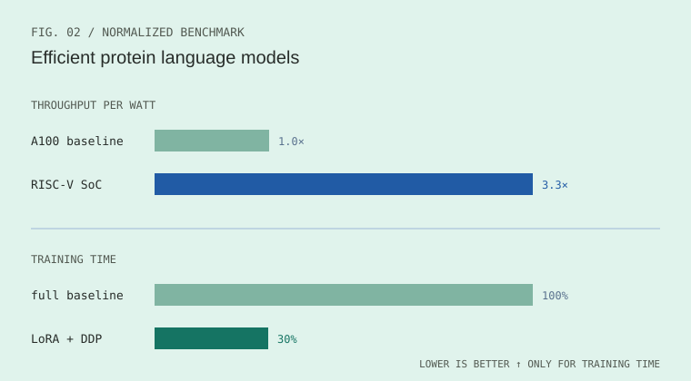
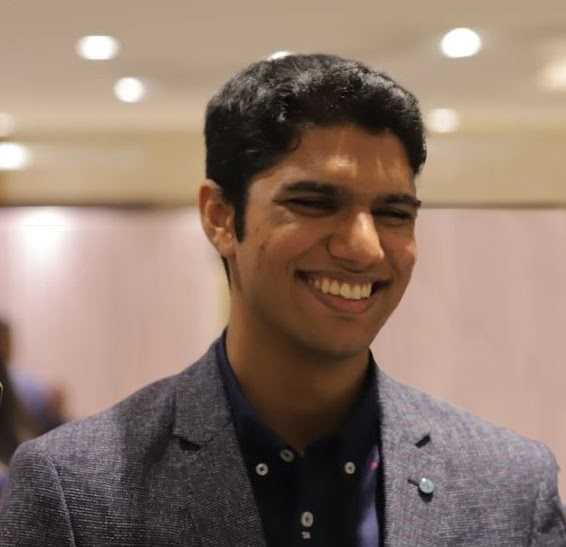
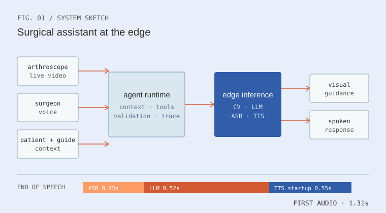
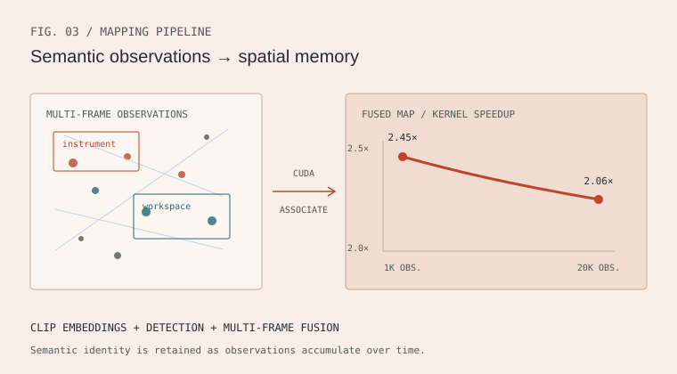

Protein models on RISC-V
What happens to energy use when you run a language model on a different chip?

I’m an ML engineer in Mountain View. At Kaliber Labs, I work on conversational assistants for surgery.
I studied AI engineering at Carnegie Mellon University and mechanical engineering at IIT Bombay.

What happens to energy use when you run a language model on a different chip?

Automating surgical workflows using a multi-agent system.

Keeping track of an object as the camera moves and it slips out of view.
Machine learning engineer building voice and vision systems for surgery.
Machine learning intern studying how efficiently protein models run on RISC-V.
M.S. in AI Engineering, with a focus on mechanical engineering.
B.Tech. in mechanical engineering with a minor in computer science and data science.
Aayush Shah and Shankar Jayaratnam · 2024
Aayush Shah, Chakradhar Guntuboina, and Amir Barati Farimani · 2024 · GitHub